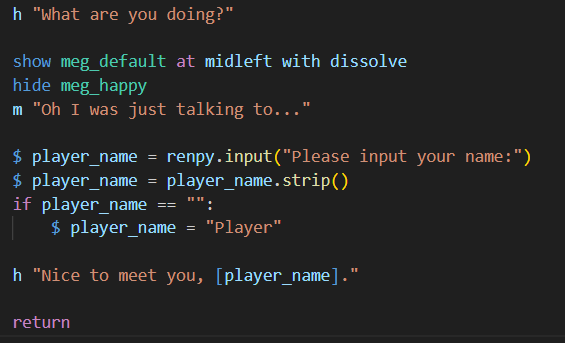
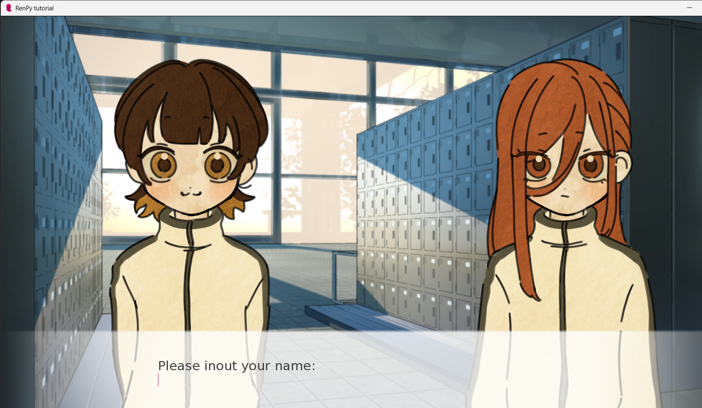
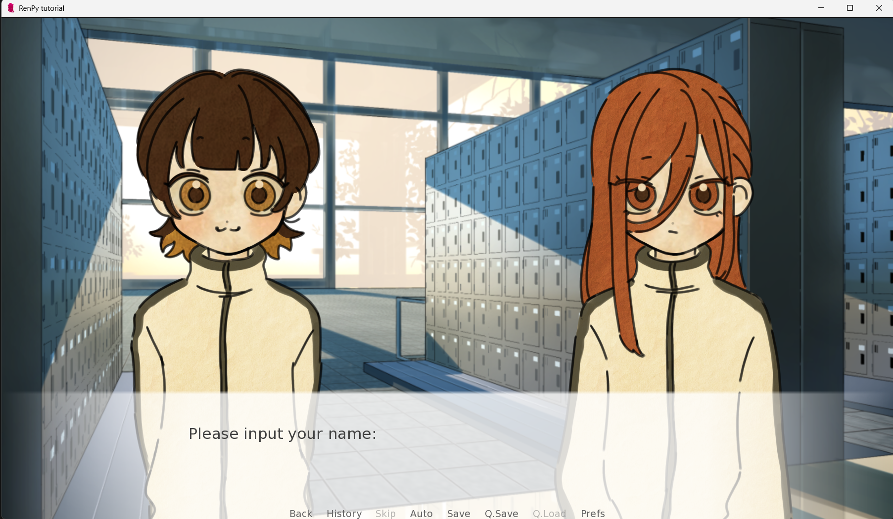

Trinn 1: Putte inn spilleren
I mange spill får du valget av å putte inn navnet ditt, det karakterene i spillet skal kalle deg, det kan du få til i Ren'Py og.
Det første du kan starte med er å definere spilleren.
Trinn 2: Navn-input
Du kan først starte med en liten dialog der en av karakterene spør om navnet til spilleren. Resten av koden er kort og enkel:
Og du er allerede ferdig med del 4!
 Flott! Nå er Ren’Py installert og spillet ditt er klart til bruk.
← Forrige del Neste del →Tilbake til forsiden